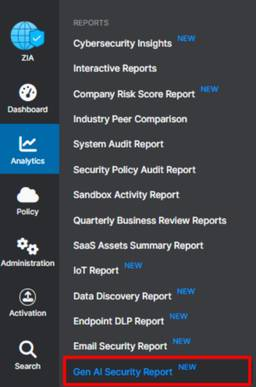

APC 技術ブログ
https://techblog.ap-com.co.jp/
株式会社エーピーコミュニケーションズの技術ブログです。
フィード

【Backstage】GitHub EMU利用時のBackstageサインイン
APC 技術ブログ
GitHub Enterprise Managed Users こんにちは。ACS事業部 イチBackstage推しの亀崎です。 皆さんはGitHub EMU(Enterprise Managed Users)をご存知でしょうか。 これは企業等の組織が自身のIDプロバイダ（IdP）と連携させ、GitHub.com上のアカウント管理を一元化する機能です。 これにより組織はGitHubアカウントの作成・プロビジョニング・アクセス権限をIdP経由で管理でき、セキュリティ強化、コンプライアンス遵守、ガバナンス向上を実現します。 EMUを利用することで、Microsoft Entra IDを組織内のID…
2日前

【Zscaler】Zscaler Gen AI Security Report徹底解説 プロンプト、DLP、利用傾向を深掘り分析
APC 技術ブログ
はじめに Zscaler Gen AI Security Reportとは Zscaler Gen AI Security Reportのメリット Zscaler Gen AI Security Reportの確認方法 Zscaler Gen AI Security Reportの内容について ①Reportの表示期間設定 ②使用されたGen AI Applicationsの数 ③特定の期間における組織全体のGen AI使用状況のサマリー ④View Prompts ⑤Analyze More ⑥Gen AI Application Usage ⑦Gen AI Usage Trends ⑧Se…
4日前
【Backstage】GitHubをSupercharge！ 開発を加速するBackstageとの連携
APC 技術ブログ
GitHub Universe '25 Recap Tokyoにて LT登壇 皆さんこんにちは。ACS事業部 亀崎です。 先日（2025年11月26日）渋谷で開催された GitHub Universe '25 Recap Tokyo にて同僚の田中とともにLTに登壇させていただきました。 www.ap-com.co.jp LTのタイトルは、『GitHubをスーパーチャージ！カタログ、標準化、可視化で開発を加速するBackstageポータルとの連携』。 いつものようにBackstage（および弊社のBacksage Managed Service、PlaTT）についてご紹介させていただきました。…
6日前

自然言語でAzureを操作！Azure MCP Server 構築＆使ってみたレポート
APC 技術ブログ
目次 目次 はじめに Azure MCP Serverの概要 Azure MCP Serverの構築 前提条件 Azure MCP Server インストール Azure MCP Serverを使ってみる 苦戦した点 終わりに はじめに こんにちは。クラウド事業部の田代です。 今回はAzure MCP Serverを構築して、Azureのリソースを操作していこうかと思います。 Azure MCP Serverの概要 Azure MCP Server は、Model Context Protocol（MCP） を実装した軽量サーバで、AI エージェントや各種クライアントから自然言語での Azur…
9日前
【Backstage】Software Templateのバージョン管理を実現する
APC 技術ブログ
はじめに みなさんこんにちは。 Backstage にどっぷり浸かっている ACS事業部亀崎です。 Backstageの主要機能の１つであるSoftware Template、みなさんご利用されていますか？ techblog.ap-com.co.jp Software Templateを使うと、リポジトリを作成するタイミングでカタログ情報も一緒に登録することができます。 通常は作成したらテンプレート元と作成されたものの関係はそれで終わり、だったのですが、そのカタログ情報に、「いつSoftware Template」を実行したのか、それはどのテンプレートなのか、バージョンはいつのものかを動的に付…
9日前
【Zscaler】Zscaler Extranetとは？外部パートナーと安全につながる「ゼロトラスト B2Bアクセス」の全貌
APC 技術ブログ
はじめに Zscaler Extranetとは 1. Extranetは従来のVPNと何が違うのか？ 1-1. セキュリティモデルが根本的に違う 1-2. 「不要なもの」を排除したシンプルな接続 2. Extranetのトラフィックフローについて ①.接続開始と本人確認 ②.ZPAからZIAへの引継ぎ ③.宛先情報の特定 (DNS) ④.アプリケーションからの応答 ⑤.ユーザーへの配信 ExtranetでのZIAおよびZPAのそれぞれの役割 Zscaler Extranet設定方法 3.前提条件 4.ZIAでの設定 4-1. エクストラネットの定義 (Extranet) 4-1-1.ZIAの[…
11日前
AWS Cost Explorer の分析を Cline に丸投げしてみた
APC 技術ブログ
はじめに Cline の設定 MCP Server 登録 コスト分析と「MFAの壁」 終わりに お知らせ はじめに こちらは エーピーコミュニケーションズ Advent Calendar 2025 3日目の記事です！ こんにちは、クラウド事業部の梅本です。 今回は Cline (VSCode) × MCP × AWS Cost Explorer を組み合わせて、AWS のコスト解析作業を AI に 「丸投げ」 してみようと思います。 具体的には、最近話題の自律型 AI エージェント Cline に、マネジメントコンソールを開くことなく AWS Cost Explorer のデータを分析してもら…
11日前
【Backstage】 対応未完了なGitHub Pull Requestを簡単に把握する
APC 技術ブログ
皆さんこんにちは。ACS事業部亀崎です。 今回はGitHubにまつわるとても便利なBackstageの機能（Plugin）をご紹介します。 GitHub Pull requestの把握が面倒なケース このページに訪れる多くの方がGitHubを利用して開発を行っていると思います。 そんな開発も複数リポジトリで行っているという方も多いのではないでしょうか。 私もそんな一人です。OSSも含めて常時4つ以上のリポジトリで作業をしています。 そうした複数のリポジトリで作業をしていると、未完了のPull Requestの把握がちょっと大変になってきませんか？ 自分が作成・オープンしたPull Reques…
11日前
【Linux】systemd/cgroupを利用してサービスのリソース制限を試してみる
APC 技術ブログ
はじめに こんにちは。クラウド事業部の佐藤です。 利用可能なリソースが限られているマシン、特にクラウド環境ですとAWS EC2やAzure VMなどでサイズが小さいインスタンスを使用している際に「あれもこれもプログラム(サービス)を動かしたいけれどリソースが少ないから難しい。。。スペック(インスタンスサイズ)を上げずにできるだけ頑張りたい。。。」という場面に遭遇する方は少なからずいらっしゃるかと思います。 そんなときのアイデアの1つとして、この記事ではsystemdとcgroupを利用したサービスに対するリソース制限を試してみたいと思います。 仕組み Linuxにはcgroupというシステムリ…
12日前
【CrowdStrike】Falcon Foundry徹底解説 その２
APC 技術ブログ
今回は、『Foundryクイックスタート』に沿って、CrowdStrike Falcon Foundryでアプリケーションを作成する手順を解説します。
12日前
【Datadog】Datadog Fundamentals試験 受験の所感
APC 技術ブログ
はじめに こんにちは。クラウド事業部の佐藤です。 先日Datadog Fundamentalsを受験し、無事合格することができました。 私は普段の業務からDatadogを使用しているので、その観点から試験の所感を書いていきたいなと思います。 試験の範囲について www.datadoghq.com この記事を書いている2025年11月29日時点では、こちらのDatadog認定プログラムのページのVIEW THE EXAM GUIDEから認定試験ガイドのPDFファイルを確認することができます。 この認定試験ガイドを読むことで試験の概要をつかむことができますが、内容をちゃんと読み込んでみると、Dat…
13日前
【AWS】GithubActionsでCDKデプロイをやってみる
APC 技術ブログ
目次 目次 はじめに どんなひとに読んで欲しい 事前準備 CDK 初期セットアップ Boostrapで生成されるロールについて GithubActions用のロール/ポリシーの作成 githubActions workflow用ファイルの作成 Secretの設定 動作確認 おわりに お知らせ はじめに こんにちは、クラウド事業部の上村です。 GithubActionsを使ってCDKをデプロイする機会があったので試してみます。 どんなひとに読んで欲しい GithubActionsでとりあえずCICDを試したい人 CDKでCICDを利用したい人 事前準備 Githubアカウント CDK環境の準備 …
13日前
【参加レポート】Cisco Live Melbourne 2025
APC 技術ブログ
iTOC事業部 マネージドビジネスソリューション部の武居です。 APCの本社NWインフラの請負部隊とICTセールス&コンサルチームの責任者として、お客様へITインフラ周りの提案を行っております。 昨年に続き、今年も 11/10～11/13 オーストラリアで開催された Cisco Live Melborune 2025 に参加してまいりましたので、イベントのレポートをお伝えしていければと思います！ ※ 去年のレポートはこちら techblog.ap-com.co.jp そもそも Cisco Live とは？ Cisco Liveは、世界の3つの地域(North America、EMEA、APJC…
16日前
【Datadog】AWS 全冠の私が、転職を機に「Datadog Fundamentals」を受験し合格した話
APC 技術ブログ
Datadog はいさい！クラウド事業部の上地やいびーん。 はじめに 先日、Datadog の認定資格である 「Datadog Fundamentals」 に合格しました。（AWS に例えると、クラウドプラクティショナー（CLF）でしょうか） APC への転職を機に Datadog の導入・運用支援にも携わる様になりました。 そんな私が、AWS 認定試験との違いなどについてお伝えしたいと思います。 AWS と Datadog の違い AWS においてタグといえば、コスト配分タグやアクセス制御（ABAC）など、「リソース管理のための付箋」という側面が強いです。 一方、Datadog におけるタグ…
20日前
Microsoft Ignite2025 参加レポート DAY4 とまとめ
APC 技術ブログ
DAY4 Japan Networking Lunch まとめ（Wrap up） ACS事業部のご紹介 Microsoft Ignite2025 に現地参加中のACS事業部の井田です。DAY4 の速報と Ignite に参加したまとめをお届けします。 DAY4 DAY4 は午前中のみとなり、会場も Moscone West のみが開かれておりました。残り少ない時間ということもあり発表は少ないですが、ハンズオン形式の lab や資格試験を無料で受験する最後のチャンスなので、比較的この辺りに多くの人が参加されていた印象です。 日本から参加している方々にとっての目玉は Japan Wrap-up S…
21日前
Microsoft Ignite2025 参加レポート DAY3
APC 技術ブログ
各セッションの概要 Simplifying Access Governance with Microsoft Entra ID Access Packages Partner: Making Agentic DevOps your Advantage 小休憩 まとめ（Wrap up） ACS事業部のご紹介 Microsoft Ignite2025 に現地参加中のACS事業部の井田です。DAY3 の速報をお届けします。 発表についての詳細はオンデマンド配信や別の記事に任せるとして、ここでは現地の雰囲気などを伝える気持ちで書いています！ DAY3 は DAY2 と同様で Moscone Cente…
22日前
Microsoft Ignite2025 参加レポート DAY2
APC 技術ブログ
各セッションの概要 Monitoring for multi-agent systems in production Partner: 3 Frontiers Playbook for AI Success in CSP Partners: evaluate and monitor AI agents to build customer trust 小休憩 無料で Azure の試験を受験してきた その他 まとめ（Wrap up） ACS事業部のご紹介 Microsoft Ignite2025 に現地参加中のACS事業部の井田です。DAY2 の速報をお届けします。 発表についての詳細はオンデマ…
22日前
GitHub x Azure OIDC Connect登録をBackstageで省力化する
APC 技術ブログ
GitHub Actionsを使用してAzureに接続する GitHub ActionsからAzureに接続する場合、OIDC Connectionで実現することが多いと思います。 learn.microsoft.com OIDC Connectionを利用するとパスワードなど秘匿情報を登録する必要もなく、安全性の高い方式です。 パスワードの代わりにGitHubとAzureの双方にそれぞれの情報を登録しておくことが必要です。 登録する内容は、Azure側（Entra ID Application登録側）にはGitHub側のOrganization名とリポジトリ名、および環境名といった情報を、G…
23日前
Microsoft Ignite2025 参加レポート DAY1
APC 技術ブログ
会場到着まで Opening Keynote 各セッションの概要 Using Azure SRE Agent to conquer incident response and reliability Tackling your tech debt with GitHub Copilot Manage agents like a pro with Foundry Control Plane Safeguard your agents with AI Red Teaming Agent in Azure AI Foundry まとめ（Wrap up） ACS事業部のご紹介 Microsoft Ig…
23日前
【AWS】ハンズオン「サーバーのモニタリングの基本を学ぼう」（CloudWatch）にチャレンジ！(後編)
APC 技術ブログ
目次 目次 はじめに どんなひとに読んで欲しい 前提 手順 [ハンズオン⑤]：WordPressの監視ダッシュボード作成 1.CloudWatchコンソール操作 2.ダッシュボード名: WordPress_dashboard と入力し、作成 3.「ウィジェットの追加」画面が表示 4.ウィジェット1：EC2のCPU（メトリクス） 5.ウィジェット2：ディスク使用率（アラーム） 6.ウィジェット3：アクセスログ分析（Logs Insights） 7.完成！ [ハンズオン⑥]：EC2インスタンス停止時の通知 1.EventBridgeルールの作成 2.イベントパターンの定義 3.ターゲットの設定 4…
24日前
【AWS】ハンズオン「サーバーのモニタリングの基本を学ぼう」（CloudWatch）にチャレンジ！(前編)
APC 技術ブログ
目次 目次 はじめに どんなひとに読んで欲しい 前提 手順 [事前準備]：CloudFormationとWordPressセットアップ 1.CloudFormationテンプレートの実行 2.WordPressの初期設定 [ハンズオン①]：EC2、ALB、RDSのメトリクス確認 1.CloudWatchコンソール操作 2.EC2のメトリクス 3.ALBのメトリクス 4.RDSのメトリクス [ハンズオン②]：EC2のディスク使用率90%以上時のアラート発報 1.アラームの作成 2.アラームの条件設定 3.アクションの設定 4.アラーム名と作成 [ハンズオン③]：WordPressのアクセスログ、…
24日前
vscodeとdevcontainerでのgit worktreeの使い方を考えてみる。（AI並列開発検討時の副産物）
APC 技術ブログ
こんにちは。 先進サービス開発事業部でNEEDLEWORKの開発を担当している田中です。 今回は、AI並列開発にむけて調査していたところgit worktreeの使い方で 知見を得たのでここに残したいと思います。 誰かの助けになればとても嬉しいです。 gitのworktreeを兄弟ディレクトリとして定義するとdevcontainerの中から参照できない。 git worktreeの例として以下のようなモノが紹介されているかと思います。 path構造 /worktree_master ├──────────/main_branch/ ← ここにgitの状態を管理する.gitディレクトリがある。 …
24日前
【Microsoft Ignite2025】keynote速報 Microsoftの戦略の凄み
APC 技術ブログ
Ignite現地参加しています！ エーピーコミュニケーションズ 取締役 兼 ACS事業部長の上林です。 今回初めて渡航して現地参加してきました。 速報と言うことでkeynoteで気になった点を、かいつまんで紹介しつつ感想を走り書きします(自分の興味なのでFoundryやAzureよりです)。自分の拙い英語での理解ですので誤りがありましたらご容赦。 1. 全体テーマ 基本的にはAIエージェントに移管していく、というメッセージが全体テーマとして貫かれてました。 365系とかazure系とはフラットに扱った上で、移管していくための概念と機能が発表された印象です。 2.気になったポイント Micros…
25日前
Microsoft Ignite2025 参加レポート DAY0
APC 技術ブログ
MS Ignite とは 基本情報 DAY0報告 明日以降の想定 ACS事業部のご紹介 Microsoft Ignite2025に現地参加中のACS事業部の井田です。 せっかくの機会ですので、速報ブログを書きます。速報ブログは発表の詳細ではなく、現地の温度感や雰囲気を極力リアルタイムで共有する目的で速報性重視でいきます。 各種発表についての詳細は、帰国後にオンデマンド配信も含めてピックアップし記事にしたいと考えています。 本日はDay0（Pre-Day）となり、明日に向けての事前準備などが含まれます。 MS Ignite について馴染みのない方に向けて基本情報から紹介していきます！ MS Ig…
25日前
【AWS】「JAWS-UG会津」＆「JP_Stripes会津」合同勉強会 2025 Autumnに参加＆登壇してきました！
APC 技術ブログ
目次 目次 はじめに 勉強会の概要 私の登壇 勉強会に参加して感じたこと おわりに お知らせ はじめに こんにちは、クラウド事業部の馬藤です。 11月7日に開催されました「JAWS-UG会津」＆「JP_Stripes会津」合同勉強会 2025 Autumnに参加＆登壇してきました。 jaws-tohoku.connpass.com 「会津ってどこ？」というのがまず皆さんの最初の疑問かと思いますが、会津は福島県にあります。 福島県は西から会津地方、中通り、浜通りと3つの地域に分かれており、勉強会は私が住んでいる会津若松市(白虎隊やNHK大河ドラマの八重の桜が有名ですね)で開催されました。 これま…
1ヶ月前
【実践レビュー】『はじめてのデータブリックス』を読んで Databricksの全機能を「ゼロから体験」してみた
APC 技術ブログ
皆さん、こんにちは！データ分析とAI活用が必須となった今、Databricksが提供する「データ インテリジェンス プラットフォーム」は、多くの企業にとって次世代のデータ基盤として注目を集めています。データウェアハウスの堅牢性とデータレイクの柔軟性を融合した「レイクハウス」の最前線に立つDatabricksですが、その多岐にわたる機能を前にして、「どこから手を付ければいいのか…」と悩む方も少なくないはずです。 今回ご紹介する『はじめてのデータブリックス』は、まさにその悩みを解消してくれる一冊でした。この本のコンセプトはシンプルかつ強力です。 「Databricks の多彩な機能を実際に操作し、…
1ヶ月前
【Zscaler】意図しない挙動になるかも！？「カスタムURL」と「親カテゴリーを保持するURL」の違い
APC 技術ブログ
今回は「カスタムURL」と「親カテゴリを保持するURLカテゴリ」の違いを紹介したいと思います。 どちらもユーザが作成する独自のURLカテゴリという点では同じですが、仕様を理解していないと意図しない挙動になるかも知れません！
1ヶ月前
HCP Terraform WorkspaceでAzure Provider認証にOIDCを利用する
APC 技術ブログ
はじめに 前提条件 Azure側（Entra ID）でサービスプリンシパルの作成と、フェデレーション資格情報の追加 HCP Terraform Workspaceで環境変数の追加を行う おわりに ACS事業部のご紹介 はじめに こんにちは。ACS事業部の青木です。 このブログでは、HCP TerraformとAzureでOIDC認証連携を行う方法について解説します。 OIDC方式での認証をすることで、デプロイを実行するプリンシパル側でシークレットキーを払い出してHCP Terraform Workspace側に渡すことなく処理を実行することができるようになります。 シークレットキーを使う場合、…
1ヶ月前
【OCI】FunctionsとLLMでGitHub通知を自動要約＆Slack連携
APC 技術ブログ
はじめに こんにちは、クラウド事業部の吉本です。 Oracle Cloud Infrastructure (OCI)上でFunctionsとリソース・スケジューラ機能を利用して、定期的にGitHubのNotificationの内容をLLMで要約してSlackに通知するアプリケーションを個人開発したので、開発の流れを紹介します。 本記事では、GitHubやSlackとの接続やプログラムの内容については軽く触れるに留め、OCIでの実装部分を中心に解説します。 アプリ開発の経緯 私は業務でOSSを組み合わせた先端システムの研究を行っており、最新のOSS情報をいち早く集める必要があります。 そのため、…
1ヶ月前